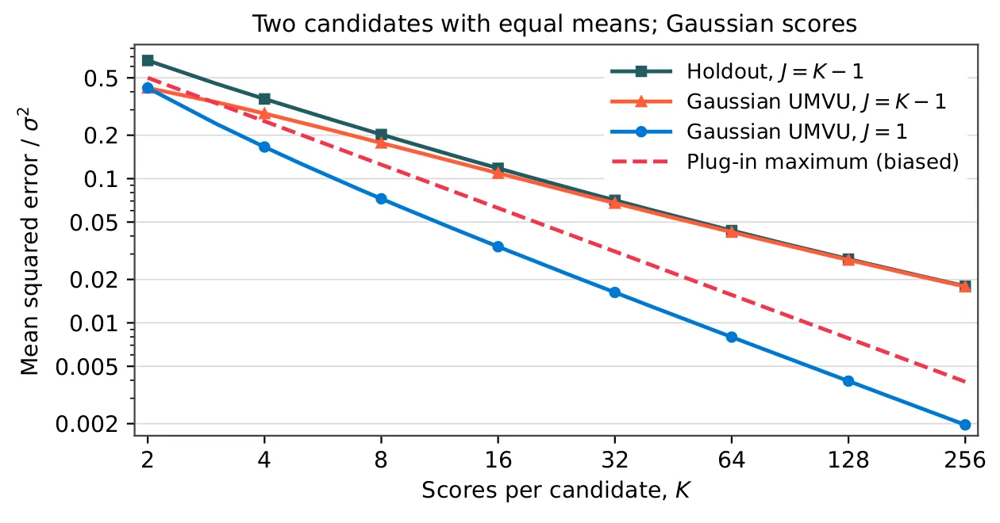
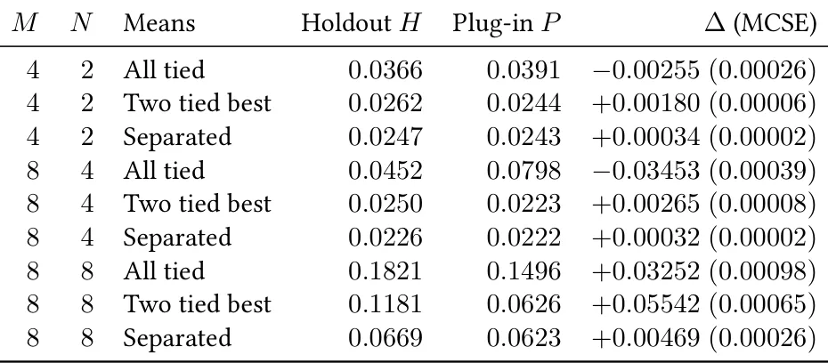

O problema: seleção e avaliação com os mesmos dados
Best-of-N (BoN) é uma técnica simples para melhorar a qualidade de modelos de linguagem: você gera N candidatos de resposta, pede a um juiz (modelo ou humano) que dê uma nota para cada um, e escolhe o de maior score. A ideia é que, mesmo que o modelo erre às vezes, gerar várias tentativas aumenta a chance de pelo menos uma ser boa.
O problema aparece na hora de medir o quanto essa estratégia funciona. Se você usa os mesmos scores que serviram para escolher o vencedor para também calcular a recompensa esperada, está cometendo um viés clássico: a seleção favorece realizações de ruído aleatório que, por acaso, foram altas. Mesmo que todos os candidatos tenham a mesma média verdadeira, o máximo observado vai subir com N. Você acaba superestimando o desempenho real.
A solução óbvia é avaliar com scores independentes, mas isso custa chamadas extras ao juiz. Este paper, de Shrey Shah e Yinheng Li, pergunta: dado que você já coletou K scores independentes por candidato, é possível construir um estimador não enviesado da recompensa esperada da política Best-of-N que usa J desses scores para selecionar? E se for possível, quanto de variância você paga por não ter viés?
O que o paper estuda
O cenário é o seguinte: você tem M candidatos gerados e observa uma matriz fixa de K scores independentes para cada um. A política de seleção escolhe uniformemente um subconjunto de tamanho N desses M candidatos, calcula a média de J scores para cada um dos N, e fica com o candidato de maior média (quebrando empates de forma uniforme). O valor dessa política é a média verdadeira do juiz para o candidato escolhido, esperada sobre todos os sorteios de subconjunto, empates e realizações de score.
A pergunta central: existe um estimador baseado apenas nessa matriz fixa que seja exatamente não enviesado para o valor da política, qualquer que seja a distribuição dos scores (desde que sejam independentes e estáveis por candidato)? A resposta é surpreendente: sim, se e somente se J < K. Ou seja, você precisa reservar pelo menos um score por candidato que não foi usado na seleção.
O método proposto, chamado Holdout, usa J = K-1 scores para selecionar e deixa um score de fora para avaliar. Para eliminar o viés de qual score ficou de fora, o estimador faz uma média cíclica: roda a seleção K vezes, cada vez deixando uma coluna diferente de fora, depois tira a média sobre todos os subconjuntos de tamanho N e sobre todos os empates. O resultado é exatamente não enviesado.

Por que J precisa ser menor que K
A impossibilidade de avaliar sem viés quando J = K vem de um argumento de grau polinomial. O funcional Best-of-N, visto como função das leis de score, tem grau polinomial que cresce com J. Um estimador não enviesado baseado em K observações independentes por candidato só consegue estimar funcionais de grau até K. Quando J = K, o grau excede o orçamento de observações, e nenhum estimador baseado só na matriz fixa pode ser não enviesado para toda lei de score independente.
Mas há uma saída: se você adquirir um único score fresco adicional do vencedor depois de rodar a seleção com todos os K scores, consegue avaliar a política all-K de forma não enviesada. A mudança no design de observação — coletar um dado novo depois de ver o resultado — quebra a impossibilidade. O resultado negativo é sobre a matriz fixa, não sobre o que você pode fazer com dados adicionais bem escolhidos.
Quanto custa não ter viés
Para quantificar o custo de exigir estimadores não enviesados, os autores estudam o caso de scores Gaussianos independentes com variância comum σ² e tamanhos fixos M ≥ N ≥ 2. No regime J = K-1 (Holdout), o risco minimax não enviesado — o erro quadrático médio do melhor estimador não enviesado no pior caso — é da ordem de σ²/√K. Ou seja, para reduzir o erro pela metade, você precisa quadruplicar o número de scores por candidato.
Se você relaxar a exigência de não ter viés, consegue melhorar a taxa: estimadores enviesados atingem risco da ordem de σ²/K, uma melhora de √K. O estimador plug-in ingênuo, que simplesmente tira a média de todos os K scores de cada candidato e seleciona o maior, é enviesado mas tem variância menor. Em alguns cenários, especialmente quando as médias verdadeiras são bem separadas, o viés é pequeno e o plug-in ganha em erro quadrático médio total.
Para o caso especial de dois candidatos (N = M = 2), o paper deriva o estimador não enviesado de variância mínima quando a variância é conhecida, e mostra que a constante minimax assintótica não enviesada é exatamente 1/(π√2) ≈ 0.225. Holdout atinge essa constante sem precisar conhecer a variância, o que é uma propriedade notável: ele é adaptativo e ótimo ao mesmo tempo.

Complexidade e escalabilidade
Calcular a média cíclica sobre todos os subconjuntos, splits e empates parece caro, mas os autores mostram que dá para fazer em O(MK log M) operações. Isso é tratável mesmo para pools grandes. A ideia é agrupar os cálculos de forma inteligente, aproveitando que muitos subconjuntos compartilham a mesma estrutura de empates.
Quando a profundidade do seletor J é fixa (não cresce com K), a avaliação cíclica de scores limitados tem risco O(K⁻¹) uniforme no tamanho do pool. Isso significa que, se você está disposto a avaliar uma política de profundidade fixa (por exemplo, sempre J=1), consegue convergência linear em K, independentemente de quantos candidatos você gerou. Essa garantia uniforme é útil para planejar orçamentos de avaliação.
Experimentos: conferindo a teoria
Todos os experimentos usam scores sintéticos com leis conhecidas, o que permite comparar estimativas com valores verdadeiros calculados analiticamente. Primeiro, os autores testam cinco pools fixos com scores Bernoulli e alvos binomiais exatos, para verificar o tratamento de empates. Depois, rodam controles Gaussianos independentes com M=16 e N=4, comparando reuso (enviesado) e Holdout na mesma profundidade. Em todos os casos, as diferenças entre Holdout e o alvo verdadeiro ficam dentro de 1.81 erros padrão de Monte Carlo de zero.
Um experimento com profundidade fixa J=1, M=N=8 candidatos, médias uniformes e desvio padrão 0.6 compara avaliação cíclica (que usa a matriz inteira de 8K scores) com um split fixo adaptativo (que usaria 8 + K-1 chamadas se você só coletasse os scores necessários). A avaliação cíclica tem menor erro quadrático médio por pool, mas o split fixo tem menor variância populacional total quando você considera o custo em número de chamadas ao juiz. A escolha depende do que você quer otimizar.

Além de dois candidatos
A Tabela 2 mostra uma fatia de um estudo Gaussiano com K=16 e variância um, comparando Holdout e o plug-in enviesado em nove células que variam M, N e o vetor de médias verdadeiras. Quando todas as médias são iguais (candidatos indistinguíveis), Holdout tem menor MSE para (M,N) = (4,2) e (8,4), mas perde para (8,8). Quando há dois candidatos empatados no topo, o plug-in ganha em todas as nove células. Quando as médias são bem separadas, os dois métodos concordam até a precisão numérica.
Esses resultados mostram que a escolha entre Holdout e plug-in depende do cenário. Se você espera que os candidatos sejam parecidos, Holdout oferece proteção contra viés. Se você sabe que há alguns candidatos claramente melhores, o viés do plug-in é pequeno e a redução de variância compensa. O paper não recomenda um método universal, mas fornece as ferramentas para entender o trade-off.
Teste de estresse: dependência entre scores
A teoria assume scores independentes entre candidatos. Para testar o que acontece quando essa premissa falha, os autores rodam um experimento com um modelo equicorrelacionado: cada score de um candidato compartilha um choque primitivo comum com correlação ρ. Eles usam M=16, N=4, K=8, σ=0.4 e variam ρ em {0, 0.1, 0.4, 0.8}, mantendo as mesmas 40.000 pools de médias Beta(2,2) para todas as correlações.
O viés total contra o alvo de scores independentes é decomposto em dois componentes: viés de avaliação (Holdout menos o valor verdadeiro da seleção dependente) e viés de lei do seletor (valor verdadeiro da seleção dependente menos o alvo independente). Em ρ=0, ambos são zero dentro do erro de Monte Carlo. Em ρ=0.1, o viés de avaliação é +0.055 e o de lei do seletor é -0.016, resultando em +0.039 total. Em ρ=0.4, os componentes são +0.183 e (valor cortado no texto). O viés de lei do seletor é negativo porque a dependência faz a seleção favorecer candidatos com choques comuns altos, que depois regridem à média. Esse efeito parcialmente compensa o viés de avaliação neste experimento, mas a direção e magnitude dependem da estrutura de dependência.
Orçamentos e intervalos de confiança
O paper discute brevemente como planejar orçamentos de avaliação. Se você tem um número fixo de chamadas ao juiz, pode escolher entre avaliar muitos pools com poucos scores cada (alto K, baixo número de pools) ou poucos pools com muitos scores (baixo K, muitos pools). A taxa de convergência O(K⁻¹) para profundidade fixa sugere que aumentar K dentro de cada pool é eficiente, mas a variância entre pools também importa.
Para intervalos de confiança, os autores mencionam que a distribuição de Holdout é complicada — envolve máximos, médias cíclicas e empates — e não tem forma fechada simples. Bootstrap ou aproximações assintóticas são caminhos possíveis, mas o paper não desenvolve isso em detalhe. Na prática, você provavelmente vai querer rodar Monte Carlo ou usar desigualdades de concentração para quantificar incerteza.
O que fica em aberto
O paper resolve a questão de possibilidade (J < K é necessário e suficiente) e caracteriza o custo assintótico de não ter viés no caso Gaussiano. Mas várias perguntas ficam abertas. Primeiro, os experimentos são todos sintéticos; não há avaliação com juízes reais (modelos ou humanos) nem candidatos gerados por LLMs de verdade. A teoria não diz nada sobre como escolher K ou J na prática, dado um orçamento fixo e uma distribuição desconhecida de qualidade de candidatos.
Segundo, a análise de dependência é apenas um teste de estresse; não há teoria para quanto viés esperar sob modelos de dependência específicos, nem métodos para corrigir ou detectar violações de independência. Terceiro, o paper não trata de juízes enviesados ou de desalinhamento entre score do juiz e preferência humana, que são preocupações centrais em aplicações reais de RLHF.
Finalmente, a comparação com plug-in é feita apenas em MSE; não há análise de risco sob perda assimétrica (onde superestimar é pior que subestimar, ou vice-versa) nem discussão de como usar esses estimadores para tomar decisões (por exemplo, escolher entre duas políticas). O foco é puramente em estimar um número, não em otimizar uma política downstream.
Por que isso importa
Best-of-N é uma das formas mais simples de melhorar modelos de linguagem sem retreinar, e é amplamente usada em sistemas de produção. Mas se você não avalia corretamente, pode estar superestimando os ganhos e tomando decisões ruins sobre quantos candidatos gerar ou qual juiz usar. Este paper mostra que o problema de viés é fundamental: não dá para avaliar sem viés usando todos os scores que você coletou para selecionar.
A boa notícia é que a solução — reservar um score por candidato — é simples de implementar e tem custo controlado. A má notícia é que o custo em variância é real: você precisa de O(K) scores para reduzir o erro como O(1/√K) sem viés, enquanto estimadores enviesados conseguem O(1/K). A escolha entre Holdout e plug-in depende do cenário, e este paper fornece as ferramentas teóricas e empíricas para fazer essa escolha de forma informada.
Para pesquisadores que trabalham com RLHF, reranking ou qualquer sistema que escolhe entre candidatos gerados, este paper é uma leitura essencial. Ele formaliza um problema que muita gente resolve na intuição e mostra onde a intuição falha. E para quem desenvolve benchmarks ou métricas de avaliação, a mensagem é clara: reusar scores de seleção para avaliação não é só uma aproximação conveniente, é uma fonte de viés que você precisa entender e, se possível, evitar.
O que fica
- Avaliar Best-of-N com os mesmos scores usados para selecionar superestima o desempenho. Estimadores não enviesados existem se e só se você reservar pelo menos um score por candidato que não foi usado na seleção.
- Holdout usa K-1 scores para selecionar e 1 para avaliar, fazendo média cíclica. É exatamente não enviesado, mas paga custo em variância: erro O(1/√K) vs O(1/K) de métodos enviesados.
- Experimentos sintéticos mostram que plug-in enviesado pode ter menor MSE quando candidatos têm médias separadas. A escolha depende do cenário; o paper fornece teoria para entender o trade-off, não uma receita universal.
Paper original: Holdout Best-of-N: Unbiased Evaluation and Its Cost
Comentários
Nenhum comentário ainda. Seja o primeiro.